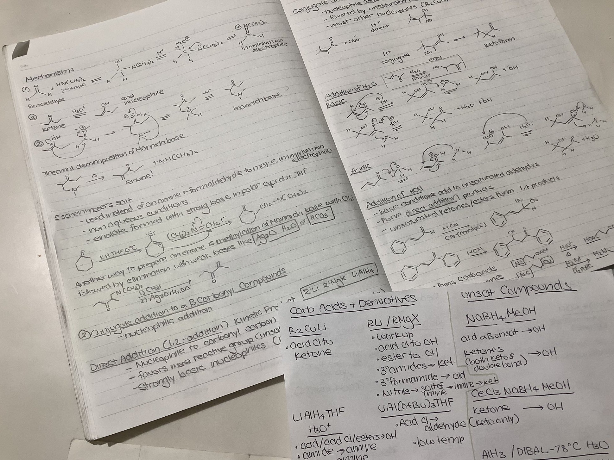
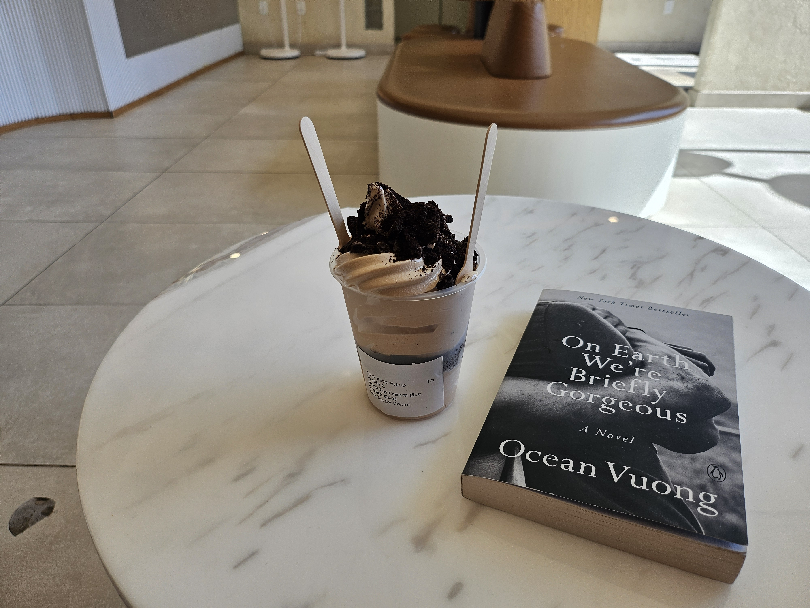
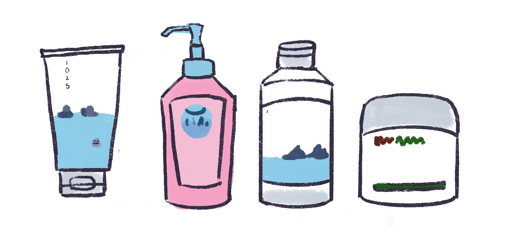

My Nights
Anecdotes and Advice for Better Sleep
One of the best and most often given advice among sleep experts, is to have a good wind-down routine. This alternative name for a bedtime routine lets your body know it's about to get rest, and makes you sleepy enough to fall asleep without much issue. Like all habits, it takes time to build, so finding a routine that works for you, and that you enjoy doing, is the best. Of course, you could hit the hay immediately after your day is done, but if you really take your time cultivating a relaxing experience for you after a day full of activities, you can prepare yourself for full restoration. Besides, your day was so busy, don't you want to take some time to slow down?
There's an excess of other night time routines on the internet to take inspiration from, especially for people looking to add something to their nights. I've been asked by many site readers if I had any specific things that I did right before I went to sleep that would help me, beyond the other tips, tricks, and resources floating around in past entries and other tabs. This is a deeper dive into my process of ensuring I can go to sleep and wake up in the best condition.
1. Go for a walk
Getting a little bit of exercise before bed can help you relax, burn off excess energy from the day, and give you a little rush of endorphins that can help you fall asleep more easily. Doing strenuous cardio or heavy weightlifting may be too exciting and negatively impact your sleep quality, so a nice, easy walk around your neighborhood would do the trick. Try this with a friend and build a habit to promote heart health. My usual go-to walking route is a path along campus. It's very convenient to live in such a walkable environment, but try to find a local park or a walking route with nice scenery. Additionally, exposure to natural light can help you regulate your circadian rhythm! Catching the sunset before you turn in for the night can let your body know that it's time to rest soon.
2. Learn something
Long-term memory forms during sleep, so by getting a bit of studying done before bed, you can benefit both your grades and your health. By tiring out your brain a little, your sleep will feel much more satisfying. Make sure not to work too close to bedtime, however, as stress can do more harm than good. My favorite type of work to do during my night study sessions is more rote memorization rather than taking notes or trying to understand new concepts. Because memory consolidation occurs while you sleep, you can repeat whatever you memorized at night with much more success in the morning.
3. Eat a good dinner
Eating a fulfilling, nutrient-rich dinner a few hours before bed gives you enough time to digest. My favorite dinner to make is a quick and easy rice bowl with vegetables and proteins. Today, I made a rice bowl with hot pepper tuna and half an avocado found in my fridge with an overeasy fried egg on top. This meal takes only five minutes to make, very little cooking is involved, and it makes me comfortably satisfied and not too full. You can also add whatever toppings, sauces, or side dishes you want, as well as make numerous substitutions. It is generally recommended to finish eating two to four hours before your bedtime so plan accordingly.
4. Read a book
Reading before bed can help you relax, settle into your routine, and prevent degenerative brain diseases like Alzheimer's in the long run. It's also a good activity to do after eating while you digest, or tucked into bed instead of scrolling on your phone. I always find myself entering a different mindset whenever I'm reading, my full attention being put into one subject without any other distractions. Pick a good book that interests you. Maybe you want to learn more about a certain subject, or maybe you want to settle into a story without thinking about it too much. My current pick is On Earth We're Briefly Gorgeous by Ocean Vuong, a book I'm reading with my book club.
5. Do some self-care
Washing my face, brushing my teeth, and doing my skincare makes me sleepy immediately. While cells repair and turn over at night, I like to take full advantage of this biological process by giving my skin everything it needs. I've adopted a Korean skin care routine, born out of years of trial and error to find what works best for my skin. My current line-up consists of an oil-based cleanser to remove my makeup and other oils that have accumulated throughout the day, a water-based cleanser to remove dirt, sweat, and residual oil, a toner to balance my skin's pH, and a moisturizer to lock everything in and keep it hydrated.
6. Tidy up before bed


Tidying your space, whether it be your desk and vanity like me, the top of your dresser, nightstand, or even your whole room, can help clear your mind before bed. Existing in a clean environment just feels nice, and can contribute to a less troublesome sleep. This can also be a habit that you can integrate into your daily life. Additionally, this can keep you up and going in the morning as you have a clean slate to work with. Instead of stumbling around amidst all your garbage, you can have an easy and streamlined morning routine. Your night and morning routines will ultimately go hand-in-hand.
7. Wear nice pajamas
My sleep routine changed after I bought pajamas specifically for sleeping. I used to wear an old T-shirt and sweatpants to bed, but having clothing dedicated to this night can make you feel more put together and give you better dreams. Instead of rooting for an oversized shirt and comfortable shorts, you have a set to opt for every single time, made out of soft fabric designed to give you great sleep. It's another indicator for your brain to get into sleep mode, and it's cute. My current pick is the Uniqlo Airism Women's Pajama set in Navy. This also comes in another color, such as cream and lavender.
Conclusion
Thank you for following along with my nighttime routine. I hope you enjoyed seeing my own process of winding down, and I would love to hear about yours in the comments. Tell me how you slept! Did you adopt any of my tips into your routine? Do you have cute pajamas? In the future, we can go over steps for my streamlined morning routine to jump-start my day with productivity. But now, it's time for bed, so turn off the lights on your way out.